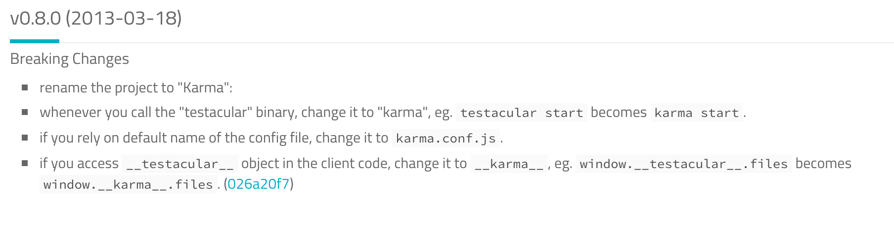
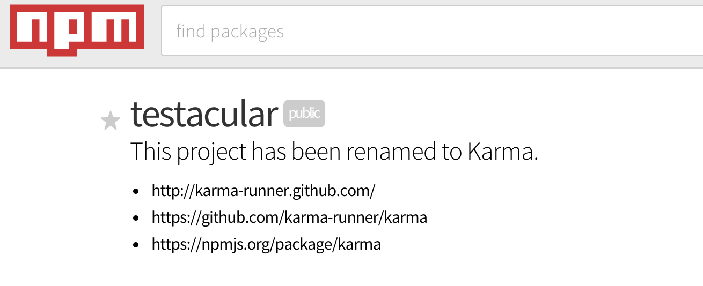

Karma
JavaSrcipt Test Runner
Created by XueQian
2015/12/05
##Agenda
---
- Karma?
- How to use?
+ Install
+ Configuration
+ Start
+ Using IntelliJ Run
+ Using Grunt
- Features
- Other Test Runner (Brief Introduction)
### Karma?
On the AngularJS team,we rely on testing and we always seek better tools to make our life easier.
That's why we created Karma- a test runner that fits all our needs.
---
>The main goal for Karma is to bring a productive testing environment to developers.
The environment being one where they don't have to set up loads of configurations,but rather a place
where developers can just write the code and get instant feedback from their tests.
Because getting quick feedback is what makes you productive and creative.
Make your test-driven development easy, fast, and fun.
### Karma?
Karma is not a testing framework, nor an assertion library.
---
Karma just launches a HTTP server, and generates the test runner HTML file you probably already know
from your favourite testing framework.
Karma (Testacular)


##install
Karma runs on Node.js and is available as an NPM package.
- Install Karma:
> $ npm install karma --save-dev
- Install plugins that your project needs:
> $ npm install karma-jasmine karma-chrome-launcher ...... --save-dev
##configuration
> $ karma init my.conf.js

##configuration
- Files
+ basePath
+ Ordering
+ pattern properties(watched, included, served, nocache)
+ Preprocessor transformations
##configuration
- Browsers

+ the browsers configuration setting is empty by default.
##configuration
- Preprocessors
+ 
+ $ npm install -g istanbul
+ npm install karma karma-coverage --save-dev
##configuration
- Plugins
+ In fact, all the existing preprocessors, reporters, browser launchers and frameworks are also plugins.
+ Installation (npm install karma-(plugin name) --save-dev)
+ Loading Plugins
##start
- Run karma:
> $ ./node_modules/karma/bin/karma start my.conf.js
- Install Karma Commandline Interface:
> $ npm install -g karma-cli
---
> $ karma start my.conf.js
##Run Configuration using intelliJ
##Grunt-Karma
> npm install grunt --save-dev
> npm install grunt-karma --save-dev
- Run tests from browsers or PhantomJS
- Run on multiple clients at once
- Supports multiple JavaScript test frameworks
- Auto-run tests on save
- Reporters
- Plugins
- Supported by IntelliJ and WebStorm
- Open source
---
- No plugin for Eclipse (yet)
- No history of previous test results
## JavaScript Test Runner
- [wallaby.js](http://wallabyjs.com/)
- [Chutzpah](http://mmanela.github.io/chutzpah/)
- [Buster.JS](http://docs.busterjs.org/en/latest/)
- [testem](https://github.com/testem/testem)
- .......